Map previews (renderer, tide low, 12:00)
pellwick — Pellwick (64x48)
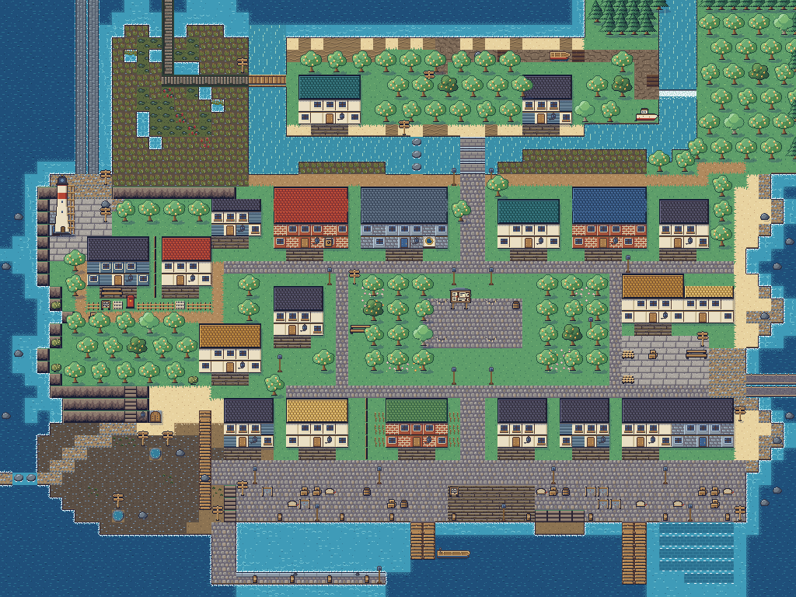
lowmoor — Lowmoor (48x32)
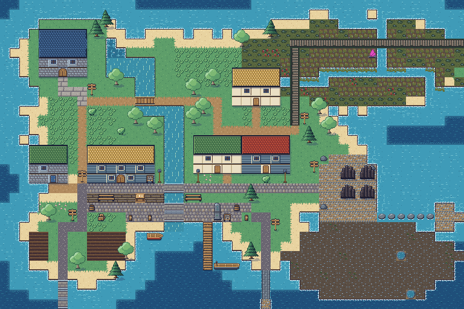
cairnhold — Cairnhold (48x32)
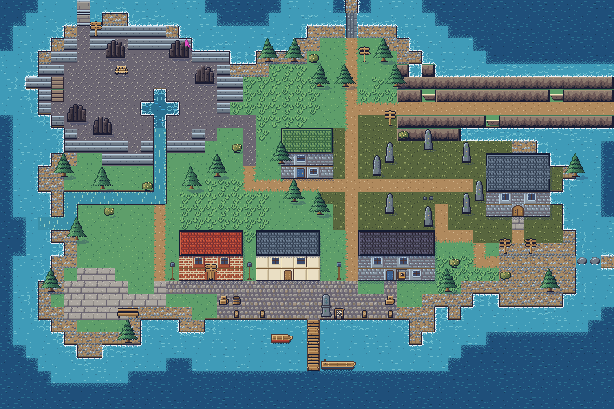
emberstep — Emberstep (48x32)
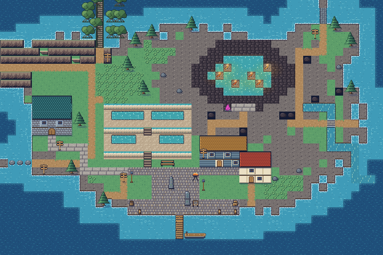
drownwood — Drownwood (48x32)
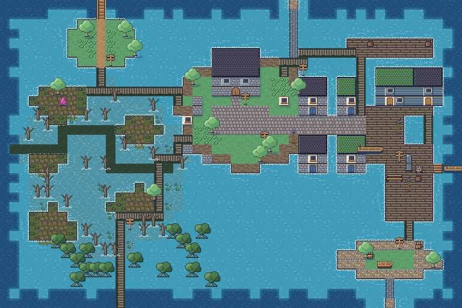
thistlewind — Thistlewind (48x32)
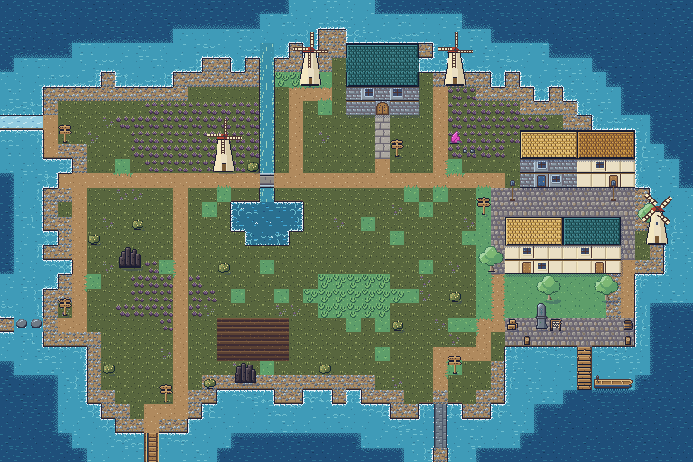
rimeholt — Rimeholt (48x32)
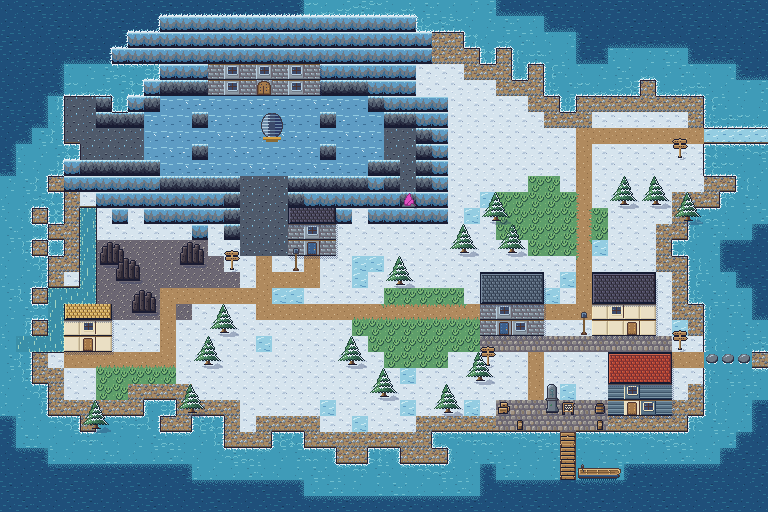
the-bar — The Bar (64x24)
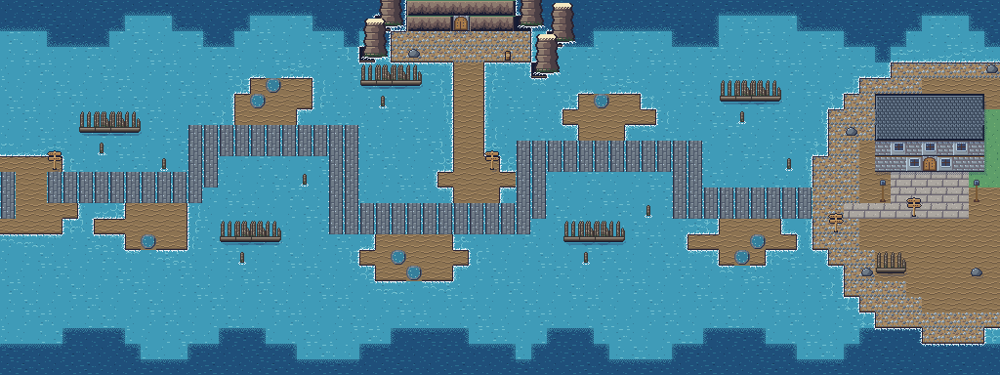
spire-turn — Turn Spire (20x14)
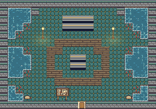
spire-ward — Ward Spire (20x14)
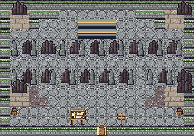
spire-weather — Weather Spire (20x14)
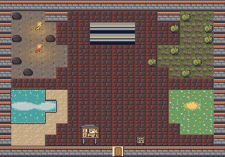
spire-hollow — Hollow Spire (20x14)
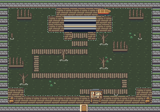
spire-relay — Relay Spire (20x14)
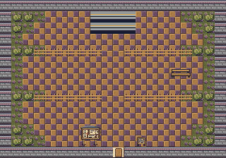
spire-mirror — Mirror Spire (20x14)
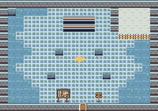
int-cottage — Keeper's Cottage (16x12)
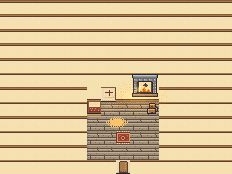
int-pells — Pell's Sundries (14x10)
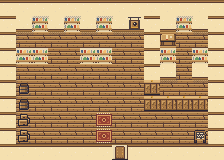
int-post-office — Post Office (12x10)
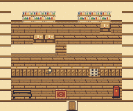
int-archive — Barnaby's Archive (16x12)
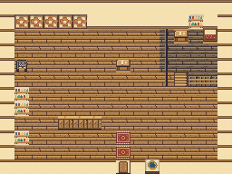
int-yard-shed — Co-op Yard Shed (14x10)
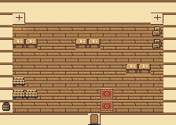
int-lighthouse — Lighthouse Stair and Lamp Room (12x18)
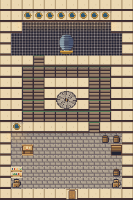
hollis-gate — Hollis's Gate (20x14)
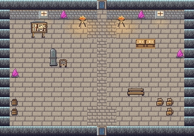
keepers-hall — Keepers' Hall (20x14)
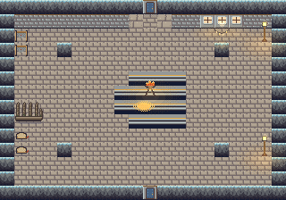
idris-hall — Idris's Hall (20x14)
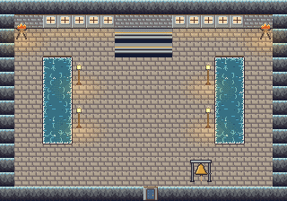
lantern-stack — The Lantern Stack (20x16)
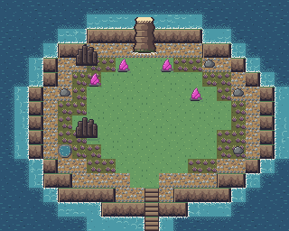